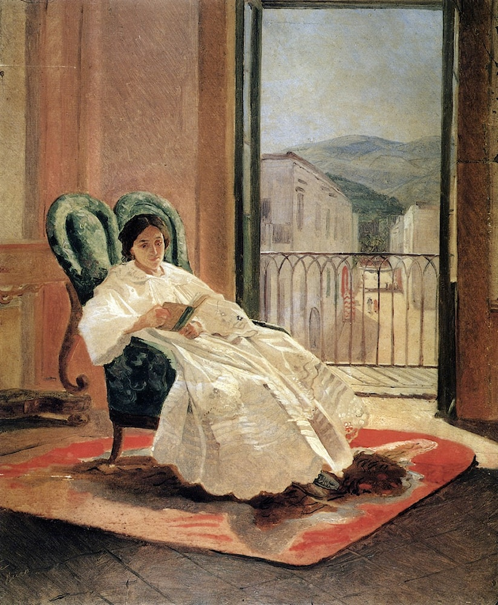
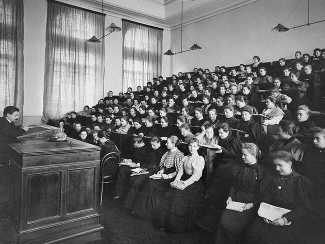

The Woman Question in 19th-Century Russia

In 19th-century Russia, few social debates were considered more urgent than those gathered under the banner of the “Woman Question:” questions about women’s education, their roles within and beyond the family, their access to paid labor, and the morality of sexual life outside marriage (Engel 58). These issues “were seen as inseparable from the most fundamental decisions regarding how society was to be organized,” bound up with the sweeping legal and institutional changes of Alexander II’s Great Reforms (Lounsbery and Berman 111–112). It is against this charged backdrop that Leo Tolstoy wrote Anna Karenina (1873–77), a novel that not only illustrates the “Woman Question” but also stages the very struggle over who has the authority to pose it, and at what cost to the women whose lives it most directly shapes.
Before the emancipation of the serfs in 1861, Russian peasant women had played a vital role in the family economy, retaining control over their own property after marriage. After 1861, however, many migrated to cities where opportunities were severely restricted (Engel 58–9). Civil service was legally closed to women; for those of higher status, “respectable” work was limited to roles such as governesses or companions. The economic precarity for lower-class women and enforced idleness for educated ones made the demand for reform increasingly urgent across social strata. The moderate wing, led by figures such as Anna Filosofova and Maria Trubnikova, responded with practical measures aimed at educated women: publishing cooperatives, expanded midwifery training, and the philanthropic Bestuzhev Courses, founded in 1878 (Engel 64). A more radical current (the nigilistki) rebelled by cropping their hair, simplifying dress, and flouting conventional sexual morality. Even the apparently progressive discourse of the 1860s was compromised, as the era’s egalitarian ideal of the “learned woman” was shaped almost entirely by men, who welcomed women’s education only insofar as it served their own political agenda (Rosenholm 114 & 118). The journalistic debate on the “Woman Question” was conducted almost exclusively by men. At the same time, women’s intellectual contributions were channeled and contained in belles-lettres, a genre that men like the critic Shelgunov refused to take seriously (Rosenholm 118). Women were invited to participate in modernity on the condition that they erase the specificity of their own experience. Anna Karenina dramatizes this structural paradox at every turn. This structural paradox is most visible at Oblonsky’s dinner party in Part IV. Pestov, a friend of Kozynshev and the liberal voice at the table, argues that women’s lack of rights and education forms a vicious circle. Yet the men around him are skeptical. Prince Shcherbatsky jokes that he too should have the right to work as a wet-nurse, and cites the proverb “women's hair is long, but their wits short,” in front of his daughters (Tolstoy 392). The women present are silenced, and when Dolly attempts to intervene at her husband’s casual allusion to his mistress, her response is described as “irritable” and “unexpected,” as though her distress at the infidelity were the transgression, not the infidelity itself (392). Tolstoy’s diction enacts the very mechanism women’s voices were rendered illegitimate by the dominant “reasonable” male discourse before they could even be heard (Rosenholm 114). If the dinner party exposes how the “Woman Question” was argued around women rather than with them, Dolly’s journey to Vozdvizhenskoye in Part VI shows the human price of that exclusion. Reflecting on fifteen years of marriage — “pregnancy, nausea, dull-wittedness, indifference to everything, and above all looking hideous” (Tolstoy 609) — she glimpses the life she might have led and envies Anna, whom she thinks simply “wants to live” (Tolstoy 610). In this moment, Tolstoy briefly gives Dolly, and by extension the reader, a character-level vision of female emancipation as something desirable and even beautiful. Yet this sympathetic window is shut down immediately when Dolly returns home to her children, where the narrator reframes her envy as a fleeting fantasy rather than a real aspiration. While Anna’s freedom is allowed to look attractive through Dolly’s eyes, Tolstoy ultimately ensures that this freedom is portrayed as leading nowhere good. Anna’s conversation with Dolly about birth control sharpens this tension further. When Anna reveals she will have no more children with Vronsky, Dolly reacts with “curiosity, surprise, and horror” (Tolstoy 639). Anna’s reasoning, however, is a form of survival: pregnancy would threaten her hold on Vronsky's love, and any child born of their union would be “unfortunate,” forced to bear someone else’s name (Tolstoy 641). What appears to Dolly as transgression is, from Anna’s perspective, a rational response to a social order that has left her with no legitimate options. Here, Tolstoy presents Anna’s autonomy over her own body as, from her point of view, a form of emancipation: that is, an intentional, self-aware refusal of the reproductive cycle that has exhausted Dolly. Yet Tolstoy’s valorization of large families frames her choice as deviatory rather than liberatory, so that what reads as freedom for Anna is disapproved by the author’s own moral values. This double standard runs throughout the novel’s moral architecture, which holds women to a higher standard than men. Anna’s refusal to breastfeed her daughter is framed as an early symptom of her moral decline, while Vronsky’s pursuit of her is viewed as a “socially sanctioned chase,” affirming his charm (Goscilo 86). While individual characters can temporarily validate the idea of women’s greater freedom — Dolly in her envy, Levin’s brother in his sympathies, and even Anna in her self-justifications — Tolstoy consistently reasserts himself to punish or discredit those visions. Therefore, female emancipation in Anna Karenina is first seen, understood, and then foreclosed.
Works Cited
- Engel, Barbara. "The Woman Question, Women's Work, Women's Options." Russian Review, vol. 42, no. 1, 1983, pp. 1–21.
- Goscilo, Helena. "Motif-Mesh as Matrix." Approaches to Teaching Tolstoy's Anna Karenina, edited by Liza Knapp and Amy Mandelker, Modern Language Association of America, 2003, pp. 83–89.
- Lounsbery, Anne. "The Woman Question." Tolstoy in Context, edited by Anna A. Berman, Cambridge University Press, 2022, pp. 111–118.
- Rosenholm, Arja. "The 'woman question' of the 1860s, and the ambiguity of the 'learned woman.'" Gender and Russian Literature: New Perspectives, edited by Rosalind Marsh, Cambridge University Press, 1996, pp. 112–128.